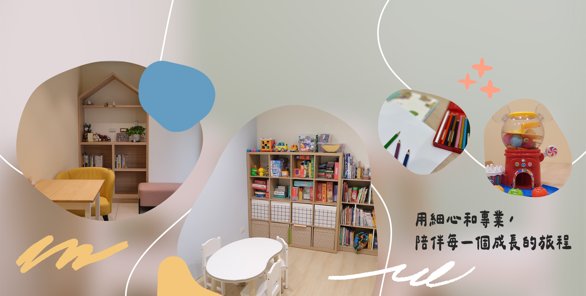

語言治療
- 語言發展評估
- 發音構音矯正
- 口吃語暢治療
- 嗓音發聲訓練
- 吞嚥失語復健
講話比較慢、動作跟不上、不太愛跟人互動——這些擔心，不用一個人扛。位在苗栗頭份的聲揚聯合治療所，提供兒童早療與成人復健，用專業評估陪你一起理解，找到最合適的療育方向。
服務頭份、竹南與大苗栗地區家庭｜兒童早療・成人復健

小朋友在成長過程中，會有幾個明顯的發展階段，像是翻身、坐起來、說出第一個詞、跟人互動等等。如果在某些階段，孩子明顯落後同齡的平均表現，那就有可能被歸類在「發展遲緩」的範圍內，而這種發展落差不只在動作上，還包含語言、社交、認知，甚至是生活自理能力。
不過也有些狀況需要專業的人員來介入或是評估。我們在苗栗頭份和竹南這一帶就遇過不少家長，雖然隱約覺得兒童有發展遲緩的跡象，但不知道從哪裡問起，也擔心是不是自己過度緊張，結果拖了一段時間才尋求幫助。
其實發展遲緩不是單一原因造成的，像是：
在苗栗頭份和竹南的家長如果發現孩子講話比較慢、動作跟不上同齡孩子，別急著擔心。聲揚聯合治療所提供兒童發展遲緩的療育服務，有語言治療、職能治療和感覺統合訓練，幫助孩子改善發展狀況！
有些孩子因為語言表達能力比較弱，漸漸變得不想講話，甚至害怕與人互動；也有因為動作發展慢，影響到自信心，進而不太喜歡參加團體活動。這些問題，通常不是觀察就能解決的。
聲揚聯合治療所的工作，就是在孩子發展遇到瓶頸的時候，給予協助和支持。會透過專業評估，幫孩子找到合適的療育方向。不管是語言治療、職能治療，還是感覺統合訓練，我們的目標就是幫助孩子一步步往前，不要因為發展速度比較慢而受限。
所有課程都從專業評估開始，先了解孩子目前的狀況，再決定課程的形式與頻率。
1500 元 / 50 分鐘
平日 17:00 前時段優惠 1200 元 / 堂
1500 元 / 50 分鐘
平日 17:00 前時段優惠 1200 元 / 堂
1200 元 / 50 分鐘
單一專業（語言／職能）
實際課程安排、頻率與時長，以評估後與治療師討論的結果為準。